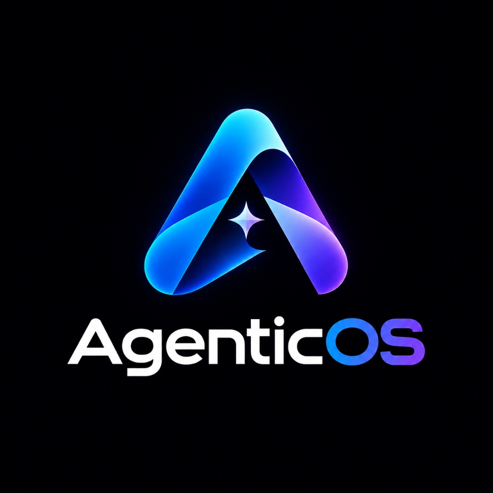

An intelligent productivity workspace unifying calendar, email, communications, notes, and documents into a single agentic interface. Heading UX research, user journeys, information architecture, wireframing, and high-fidelity screen design.

Modern knowledge workers toggle between 6 to 11 siloed applications daily. AgenticOS synthesizes cross-tool data into contextual, proactive agent actions.
Users waste up to 32% of productive time reorienting between disparate communication, scheduling, and document repositories.
Rather than awaiting reactive text prompts, AgenticOS builds an ambient graph of tasks, surfacing pre-drafted replies and agenda syncs.
A coherent design system and keyboard-first command palette ensuring human-in-the-loop oversight at every autonomy level.
Interviews with 18 enterprise knowledge workers highlighted how context loss creates decision fatigue and missed deliverables.
Most SaaS vendors slap a generic conversational LLM widget into an existing sidebar without altering the underlying mental model. Users still manually copy-paste citations, URLs, and task tickets across windows.
When autonomous agents perform bulk operations (e.g. rescheduling 4 conflicts across 8 team members), users need granular preview states, reversibility, and high-contrast diff views.
Synthesizing empathy maps and user journey audits across primary knowledge roles.
Primary Goal: Track team blockers across Slack, Linear, and Figma without spending 45 minutes manually drafting status roundups.
Key Frustration: Disconnected timestamps across tools leading to obsolete daily sprint updates.
Primary Goal: Protect uninterrupted 3-hour focus blocks while ensuring urgent production incidents cleanly penetrate do-not-disturb filters.
Key Frustration: Constant calendar fragmentation caused by ad-hoc meeting requests.
Iterative design stages prioritizing high speed, spatial clarity, and keyboard navigation.
Mapped 4 primary functional layers: Global Command Orchestrator, Unified Data Canvas, Agent Action Feed, and Verification Drawer.
Tested 3 layout paradigms (Split Pane, Infinite Canvas, and Modal Hub). The 3-column progressive-disclosure layout reduced task completion time by 38% in paper prototyping.
Formulated an intuitive 3-tier visual signaling standard for AI actions: Automated (green dot), Approval Required (amber pill), and Ambiguous / Multi-choice (blue dropdown).
Built with accessible WCAG AAA contrast ratios, rigorous token semantic naming, and smooth spring physics.
Global Cmd+K palette allows users to trigger composite workflows ("Schedule team sync and attach draft brief") without touching a mouse.
Every automated schedule alteration or email draft displays side-by-side diff previews with instantaneous 1-click reversal.
The core operating surfaces engineered for daily focus and agent orchestration.
A personalized executive card stack synthesizing urgent overnight pings, calendar conflicts, and prioritized draft responses.
A real-time audit log of tasks resolved in the background with explicit human-in-the-loop review triggers.
Meeting notes, task items, and linked references render in real-time alongside attendee calendars.
Evaluated through usability benchmarking sessions and heuristic evaluations.